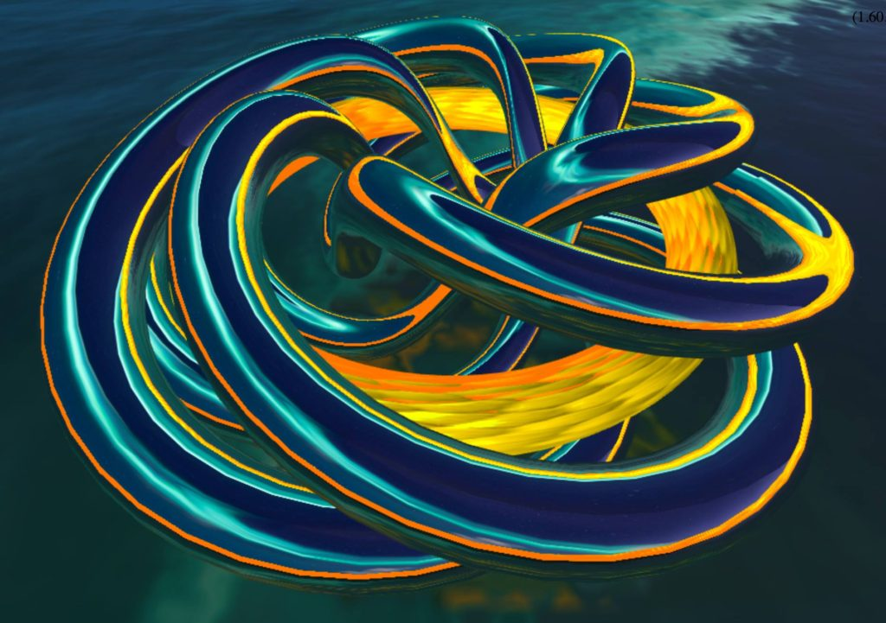

Formula Toy is a simple and free WebGL app I wrote that allows you to enter in 3-d formulas and see the resulting surface. Sort of like Desmos, but for 3D.
When I first wrote it you could express your formulas in 3 different coordinate systems: cartesian, spherical (polar), and cylindrical. I recently add toroidal which is not very useful except for drawing toruses:
radius=.5+sin(phi)/(15)*3
AND I added parametric surfaces. If you choose this option, the system is expecting formulas for X, Y, and Z. You are given U and V. For instance a helix could be expressed as:
u=u*(2*pi); v=v*(6*pi); x=u*cos(v); y=u*sin(v); z=v;
Parametric equations that are functions of a single variable (t) instead of 2 variables (u,v), don’t display because they have zero thickness. For instance the parametric formula for a trefoil knot is a function of 1 variable. To make this visible in formula toy, you need a tube geometry so that the knot doesn’t have zero thickness/volume. Three.js offers a tube geometry but you can also achieve the same effect using the parametric geometry, but with a little extra math. We can start with a torus, and make that our ‘tube’ that will be bent into a trefoil. Here is the parametric formula for a torus:
u=u*(2*pi); v=v*(2*pi); x=(4+cos(v))*cos(u); y=(4+cos(v))*sin(u); z=sin(v);
So to plot a trefoil:
// Setup u=u*(2*pi); v=v*(2*pi); phi=u;
// Parametric formula for a trefoil pp=2; // A trefoil is a (2,3) torus ring. qq=3; rr=cos(qq*phi)+2; // xx,yy,zz are the formula for the trefoil, a function of one variable (phi) xx=rr*cos(pp*phi); yy=rr*sin(pp*phi); zz=-3*sin(qq*phi);
// Modified Torus formula to bend a torus into a trefoil shape: x=(4*xx+cos(v)*xx/rr); y=(4*yy+cos(v)*yy/rr); z=sin(v)+zz/rr;
So that works, and is succinct, but you could also achieve the same thing in a more mathematically correct but longer way. The correct way is to take 2 normal vectors to the derivative of the trefoil formula with respect to phi. Pseudo-code would look something like this:
var dv = df(pp, qq, phi);
var north = new THREE.Vector3(0,0,1);
var v1 = cross(dv, north);
v1.normalize();
var v2 = cross(dv, v1);
v2.normalize();
x = xy + (cos(theta)*v1.x + sin(theta)*v2.x)*.2,
y = yy + (cos(theta)*v1.y + sin(theta)*v2.y)*.2,
z = zz + (cos(theta)*v1.z + sin(theta)*v2.z)*.2,
But that code uses three.js objects so is beyond what you can do in formula toy.
A trefoil is just on example of a torus knot. It is a (2,3) torus knot when means it winds 3 times around a circle in the interior of the torus, and 2 times around the torus’ axis of rotational symmetry. There is a whole family of torus knots (p,q). p and q correspond to pp and qq in the parametric formula above.
For instance, here is a (3,7) knot:
Below is another example which shows a (5,6) torus knot winding around a torus. This was not done in Formula Toy since it draws 2 surfaces (the knot and the torus), and Formula Toy only draws one surface. (but it was all done with three.js).

 Rotations, Transformations – Geometries and Meshes
Complex Surfaces
Rotations, Transformations – Geometries and Meshes
Complex Surfaces